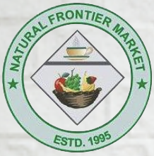

Local businesses and institutions keep the station on air. Their support pays for a platform that reflects the whole neighborhood back to itself.


Cortelyou's neighborhood market, supporting the station and the block.
Natural Frontier Market is a neighborhood health-food grocery on Cortelyou Road — organic and natural food, fresh produce, a juice bar, and vitamins and supplements, serving Ditmas Park and Flatbush for over two decades. As a station sponsor, it helps keep Cortelyou Road Radio on air, and shares monthly specials with listeners.


Flatbush support for youth, housing, and neighborhood development.
The Flatbush Development Corporation (FDC) is a long-running community nonprofit working across Flatbush — afterschool programs and summer camps, small-business and economic development, housing support, and tenant advocacy. Its backing helps Cortelyou Road Radio stay rooted in the community it covers.
Want your business on air and on the site? Cortelyou Road Radio partners with neighborhood shops, restaurants, and institutions — reads, spots, and sponsor spotlights that sound like the neighborhood, not an ad break.
Get in touch